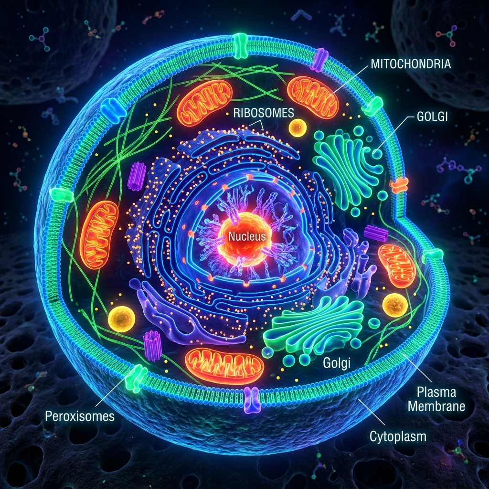

¿Qué es una célula?
La célula es la unidad más pequeña que cumple todas las funciones de un ser vivo. Imagínala como una ciudad minúscula con muros, fábricas, centrales de energía y un centro de control. ¡Tú estás hecho de billones de ellas!
Cada célula es capaz de nacer, crecer, alimentarse, relacionarse con otras células, reproducirse y morir. Estas son las mismas funciones que cumple cualquier ser vivo, desde una bacteria diminuta hasta una ballena azul gigante. Por eso decimos que la célula es la unidad fundamental de la vida.
La mayoría de las células son tan pequeñas que no las puedes ver a simple vista. Necesitas un microscopio para observarlas. Una célula típica mide entre 10 y 100 micrómetros (una micra es la milésima parte de un milímetro). Para que te des una idea, necesitarías apilar unas 100 células una encima de otra para alcanzar el grosor de un cabello.

Partes clave de una célula eucariota: el núcleo, las mitocondrias y los ribosomas.
Historia del descubrimiento de la célula
La historia de cómo descubrimos las células es fascinante. En 1665, un científico inglés llamado Robert Hooke observó un trozo de corcho con un microscopio muy básico. Vio que estaba formado por pequeñas "celdas" y las llamó cells (células en inglés), porque le recordaban a las celdas pequeñas de un monasterio.
Pocos años después, el científico holandés Anton van Leeuwenhoek construyó microscopios mucho más potentes y fue el primero en observar células vivas: bacterias, protozoos y glóbulos rojos de su propia sangre. ¡Imagina la emoción de ser la primera persona en ver seres vivos microscópicos!
La Teoría Celular
Durante casi 200 años, los científicos siguieron estudiando las células. En 1839, dos científicos alemanes, Matthias Schleiden (que estudiaba plantas) y Theodor Schwann (que estudiaba animales), llegaron a la misma conclusión: todos los seres vivos están hechos de células. Más tarde, en 1855, Rudolf Virchow completó la teoría con una idea fundamental: toda célula proviene de otra célula preexistente.
Concepto clave
Los 3 principios de la Teoría Celular
1. Todos los seres vivos están formados por una o más células.
2. La célula es la unidad más pequeña que tiene vida propia.
3. Toda célula proviene de otra célula que ya existía antes.

Desde los primeros microscopios de Hooke hasta los modernos microscopios electrónicos, la tecnología nos ha permitido ver lo invisible.
Tipos de Células
Existen dos tipos principales de células que debes conocer:
Células Procariotas
Las células procariotas son las más simples y antiguas. La palabra "procariota" viene del griego y significa "antes del núcleo" (pro = antes, karyon = núcleo). Estas células no tienen un núcleo definido: su ADN flota libremente en el citoplasma en una zona llamada nucleoide.
Las procariotas son organismos unicelulares (formados por una sola célula). El ejemplo más conocido son las bacterias. En Colombia, las bacterias son esenciales en muchos procesos: las bacterias del yogur que comes en el desayuno, las que viven en tu intestino ayudándote a digerir los alimentos, e incluso las que se usan para limpiar derrames de petróleo en la región del Catatumbo.
Células Eucariotas
Las células eucariotas son más complejas y evolucionadas. La palabra "eucariota" significa "núcleo verdadero" (eu = verdadero, karyon = núcleo). Estas células sí tienen un núcleo rodeado por una membrana que protege el ADN.
Los animales, las plantas, los hongos y los protozoos están formados por células eucariotas. Tú, las orquídeas de Colombia (¡tenemos más de 4.270 especies!), los osos de anteojos del Parque Los Nevados y hasta los hongos que crecen en los cafetales del Eje Cafetero están hechos de células eucariotas.
| Característica | Procariota | Eucariota |
|---|---|---|
| Núcleo | No tiene (el ADN está suelto en el citoplasma) | Sí tiene (el ADN está protegido por una membrana) |
| Tamaño | Muy pequeña (1-10 μm) | Más grande (10-100 μm) |
| Orgánulos | Muy pocos, sin membrana | Muchos, con membrana propia |
| Organismos | Bacterias y arqueas (siempre unicelulares) | Animales, plantas, hongos, protozoos |
| Antigüedad | Las primeras en aparecer (3.500 millones de años) | Aparecieron después (2.000 millones de años) |
| Reproducción | Simple (fisión binaria) | Más compleja (mitosis y meiosis) |
| ADN | Una sola cadena circular | Múltiples cadenas lineales (cromosomas) |
¿Sabías que...?
¡En tu cuerpo hay más bacterias (células procariotas) que células humanas! Se estima que por cada célula humana hay aproximadamente 1.3 bacterias, la mayoría en tu intestino. Pero no te preocupes: la gran mayoría son beneficiosas y te ayudan a digerir la comida, producir vitaminas y protegerte de enfermedades.
Partes principales de la célula
Todas las células, sean procariotas o eucariotas, tienen tres partes fundamentales:
Membrana plasmática
Es una capa delgada y flexible que rodea la célula. Actúa como la "puerta de seguridad" de la célula: controla qué sustancias entran (como nutrientes y oxígeno) y cuáles salen (como desechos). Es selectivamente permeable, lo que significa que deja pasar algunas cosas pero no otras. Imagina un portero de discoteca que solo deja entrar a las personas que están en la lista.
Núcleo
Es el "cerebro" o centro de control de la célula. Contiene el ADN (ácido desoxirribonucleico), que es como un libro de instrucciones con toda la información para construir y mantener un ser vivo. El ADN determina desde el color de tus ojos hasta tu tipo de sangre. En las células eucariotas, el núcleo está protegido por una doble membrana con poros que permiten la comunicación con el resto de la célula.
Citoplasma
Es el material gelatinoso que llena el interior de la célula, entre la membrana y el núcleo. Está compuesto principalmente por agua, sales minerales y proteínas. En el citoplasma flotan todos los orgánulos (las "partes" de la célula) y es donde ocurren muchas reacciones químicas importantes para la vida.
Mitocondrias
Son las "centrales de energía" de la célula. Mediante un proceso llamado respiración celular, transforman los nutrientes de los alimentos (como la glucosa) y el oxígeno en ATP (adenosín trifosfato), que es la forma de energía que la célula puede usar. Sin mitocondrias, tus células no tendrían energía para funcionar.
Ribosomas
Son las "fábricas de proteínas". Fabrican proteínas siguiendo las instrucciones del ADN. Las proteínas son materiales esenciales para construir y reparar tu cuerpo: tus músculos, tu piel, tus cabellos y las enzimas que te ayudan a digerir los alimentos están hechos de proteínas.

Las células vistas bajo un microscopio electrónico revelan un mundo fascinante de estructuras y orgánulos trabajando en equipo.
Células animales vs. células vegetales
Aunque ambas son eucariotas, las células animales y vegetales tienen diferencias importantes:
| Estructura | Célula Animal | Célula Vegetal |
|---|---|---|
| Pared celular | No tiene | Sí tiene (rígida, hecha de celulosa) |
| Cloroplastos | No tiene | Sí tiene (hacen fotosíntesis) |
| Vacuola central | Vacuolas pequeñas y varias | Una vacuola central gigante (ocupa hasta el 90%) |
| Forma | Irregular, redonda | Rectangular, fija |
| Centriolos | Sí tiene | Generalmente no tiene |
| Lisosomas | Sí tiene | Rara vez tiene |
Concepto clave
Fotosíntesis
La fotosíntesis es el proceso por el cual las plantas fabrican su propio alimento usando la luz del sol, agua y dióxido de carbono (CO₂). Ocurre en los cloroplastos y produce glucosa (azúcar) y oxígeno. Sin fotosíntesis, no habría oxígeno para respirar ni alimento para los animales. Los bosques colombianos, como la Amazonía y el Chocó biogeográfico, son verdaderas fábricas de oxígeno gracias a este proceso.
Organismos unicelulares y pluricelulares
Unicelulares
Son seres vivos formados por una sola célula. Esa única célula debe hacer todo: alimentarse, respirar, reproducirse y responder al ambiente. Ejemplos incluyen bacterias, amebas, paramecios y euglenas. Aunque parecen simples, son increíblemente eficientes y pueden vivir en los ambientes más extremos: aguas termales, hielo, desiertos y hasta en las profundidades del océano.
Pluricelulares
Son seres vivos formados por muchas células que trabajan en equipo. Los animales, las plantas y los hongos son pluricelulares. En estos organismos, las células se especializan: cada tipo de célula hace un trabajo diferente. Es como un equipo de fútbol donde cada jugador tiene una posición: el portero, los defensas, los mediocampistas y los delanteros. Todos son necesarios para ganar.

Colombia es el segundo país más biodiverso del mundo. Toda esta vida, desde las orquídeas hasta los jaguares, está hecha de células.
Tipos de células especializadas en tu cuerpo
Tu cuerpo tiene muchos tipos de células, cada una con un trabajo especial:
Glóbulos rojos (eritrocitos)
Son como camiones de reparto que llevan oxígeno desde los pulmones hasta cada rincón de tu cuerpo. Son tan dedicados a su trabajo que no tienen núcleo para tener más espacio para la hemoglobina, la proteína que transporta el oxígeno. Viven aproximadamente 120 días y tu cuerpo produce millones de nuevos cada segundo.
Neuronas
Son las células del sistema nervioso. Transmiten señales eléctricas a gran velocidad, permitiéndote pensar, sentir, moverte y recordar. Algunas neuronas son muy largas: las que van desde tu médula espinal hasta la punta de tus dedos del pie pueden medir más de 1 metro. ¡Imagina una célula tan larga como un bate de béisbol!
Células musculares (miocitos)
Son las células que te permiten moverte. Se encogen (contraen) y se estiran (relajan) para que puedas caminar, correr, sonreír y hasta bombear sangre con tu corazón. Tu corazón está hecho de un tipo especial de músculo que nunca se cansa.
Células de la piel (queratinocitos)
Forman una barrera protectora que te protege del sol, las bacterias y las heridas. Se renuevan constantemente: cada 28 días aproximadamente, ¡tu piel es completamente nueva! Piensa en eso la próxima vez que te quemes con el sol en la playa de Cartagena.
Osteocitos (células óseas)
Son las células que forman tus huesos. Son muy resistentes y trabajan constantemente para mantener tus huesos fuertes. Cuando te fractures un hueso (¡ojalá nunca!), los osteocitos son los que ayudan a repararlo.
¿Sabías que...?
¡El cuerpo humano tiene aproximadamente 37.2 billones de células! Eso es 37.200.000.000.000. Si pudieras poner todas las células de tu cuerpo en fila, darían la vuelta a la Tierra más de 4 veces. Y cada segundo, mueren millones de células viejas y nacen millones de nuevas.
¿Sabías que...?
La célula más grande que puedes ver a simple vista es la yema de un huevo de avestruz. ¡Es una sola célula! Mide unos 15 centímetros de diámetro. En Colombia, las avestruces se crían en granjas de Boyacá y Cundinamarca, así que podrías ver una de estas células gigantes sin necesidad de microscopio.
¿Sabías que...?
Colombia es uno de los países más biodiversos del planeta. Tenemos más de 1.900 especies de aves (¡la número 1 del mundo!), más de 4.270 especies de orquídeas y más de 3.000 especies de peces de agua dulce. Toda esta increíble diversidad de vida comienza con una sola célula.
¿Cómo se alimentan las células?
Las células necesitan energía para vivir, y la obtienen de diferentes maneras:
Células autótrofas
Son las células que fabrican su propio alimento. Las células vegetales son autótrofas porque realizan la fotosíntesis: usan la luz del sol, el agua y el CO₂ para producir glucosa. Por eso las plantas no necesitan "comer" como los animales; con luz solar, agua y tierra es suficiente.
Células heterótrofas
Son las células que necesitan consumir otros organismos para obtener energía. Tus células son heterótrofas: obtienen energía de los alimentos que comes. Cuando te comes una arepa, tu sistema digestivo descompone el maíz en nutrientes simples que tus células pueden usar para producir energía.
Concepto clave
Respiración celular
La respiración celular es el proceso por el cual las células obtienen energía. Ocurre en las mitocondrias y usa glucosa (de los alimentos) y oxígeno para producir ATP (energía), agua y CO₂. La fórmula es: Glucosa + Oxígeno → Energía (ATP) + Agua + CO₂. Esto es lo que pasa en tus células cada vez que respiras y comes.
La célula en la vida cotidiana colombiana
Las células están presentes en muchos aspectos de la vida en Colombia:
El café colombiano
Las células de la planta de café realizan fotosíntesis para producir los granos que luego se convierten en el famoso café colombiano. Las células de la hoja del cafeto capturan la luz solar en los altiplanos de Nariño, Huila y Antioquia para producir la energía que hace crecer los frutos.
La fermentación
Las levaduras son células eucariotas unicelulares que se usan para hacer pan, cerveza y vino. En Colombia, las levaduras son esenciales para hacer la chicha (bebida tradicional de maíz fermentado) y el pandebono (que necesita levadura para esponjar). La fermentación es el proceso por el cual estas células transforman el azúcar en alcohol y gas carbónico.
Los probióticos
Las bacterias beneficiosas (células procariotas) están presentes en el yogur y otros alimentos fermentados. En Colombia, cada vez más personas consumen probióticos para mejorar su salud digestiva. Estas bacterias vivas ayudan a mantener el equilibrio de tu flora intestinal.

El café colombiano, uno de los mejores del mundo, es producto de las células vegetales que realizan fotosíntesis en las montañas de Colombia.
¡Pon a prueba lo que aprendiste!
1. ¿Cuál es la función del núcleo de la célula?
2. ¿Qué tipo de célula NO tiene núcleo definido?
3. ¿Qué orgánulo produce la energía de la célula?
4. ¿Quién fue el primer científico en observar células?
5. ¿Qué estructura tienen las células vegetales que NO tienen las animales?